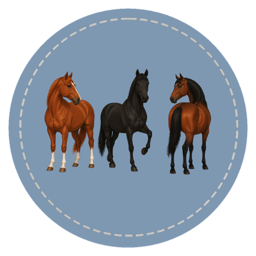

Every horse coat color traces back to three base colors: chestnut, black, and bay. Learn to identify each one with confidence using clear visual clues, real horse examples, and structured lessons.

Course Curriculum
Each course is organized into focused lessons designed to build knowledge step by step through visual learning, interactive practice, review activities, and skill-building exercises.
Designed to make horse color education approachable and accessible for all experience levels through flexible, self-paced learning and guided visual instruction.
Ready to Start?
Lessons designed to build clear, confident understanding step by step. Learn to recognize, describe, and apply key concepts with real-world relevance.
Start the Course